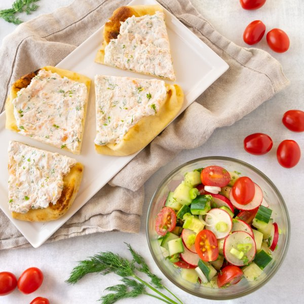

Toasted Naan with Smoked Salmon-Goat Cheese Spread & Chopped Salad

Prep Time
30 min
Nutrition (per serving)
628 kcalCalories
26.2 gProtein
66.9 gCarbs
29.1 gFat
Full nutrition table
| Calories | 628 kcal |
| Total fat | 29.1 g |
| Saturated fat | 14.1 g |
| Trans fat | 0.7 g |
| Cholesterol | 58.3 mg |
| Sodium | 1140.4 mg |
| Carbohydrates | 66.9 g |
| Fiber | 5.2 g |
| Sugars | 10.4 g |
| Protein | 26.2 g |
| Potassium | 754.7 mg |
| Calcium | 205.7 mg |
| Iron | 5.1 mg |
| Vitamin A | 1505.5 IU |
| Vitamin C | 30.9 mg |
| Vitamin D | 13.8 IU |
Cookware
Ingredients
- 1English cucumber
- 4flatbreads or naan
- ½ small bunchfresh dill
- 2 clovesgarlic
- 1 (4 oz) loggoat cheese
- 1 pintgrape tomatoes
- ½ small bunchgreen onions (scallions)
- 1lemon
- ½ cupplain Greek yogurt
- 1 bunchradish
- 1 (4 oz) pkgsmoked salmon
- black pepper
- crushed red pepper
- extra virgin olive oil
- pure maple syrup
- salt
Steps
- Preheat oven to 450°F.
- Wash and dry the fresh produce.1 lemon
½ small bunch fresh dill
½ small bunch green onions (scallions)
1 English cucumber
1 bunch radish
1 pint grape tomatoes - Zest lemon into a small bowl, then juice it into a medium bowl.
- Using a knife, shave dill leaves off the stems; discard stems and mince the leaves. Add half of the dill to each bowl.
- Chop salmon into ¼-inch pieces and add to the small bowl with the lemon zest.1 (4 oz) pkg smoked salmon
- Crumble goat cheese into the bowl with the salmon. Add yogurt and crushed red pepper; mash with a fork to combine the spread and set aside.1 (4 oz) log goat cheese
½ cup plain Greek yogurt
⅛ tsp crushed red pepper - Arrange naan on a large baking sheet pan. Place in the oven (it doesn't have to be fully heated) and bake, flipping halfway through, until crispy, about 10 minutes. Remove from the oven.4 flatbreads or naan
- Meanwhile, peel and mince garlic. Add to the medium bowl with the lemon juice, along with oil, maple syrup, salt, and pepper. Whisk to combine the dressing.2 cloves garlic
2 tbsp extra virgin olive oil
2 tsp pure maple syrup
½ tsp salt
½ tsp black pepper - Trim green onions; cut crosswise into ¼-inch pieces and add to the bowl with the dressing.
- Trim and medium dice the cucumber; add to the bowl.
- Trim off and discard tops and root ends of radishes; thinly slice and add to the bowl.
- Halve tomatoes and add to the bowl. Toss to combine the salad.
- Divide salmon-goat cheese spread between toasted naan and smooth out in an even layer. Cut into quarters.
- To serve, divide naan and salad between plates. Enjoy!